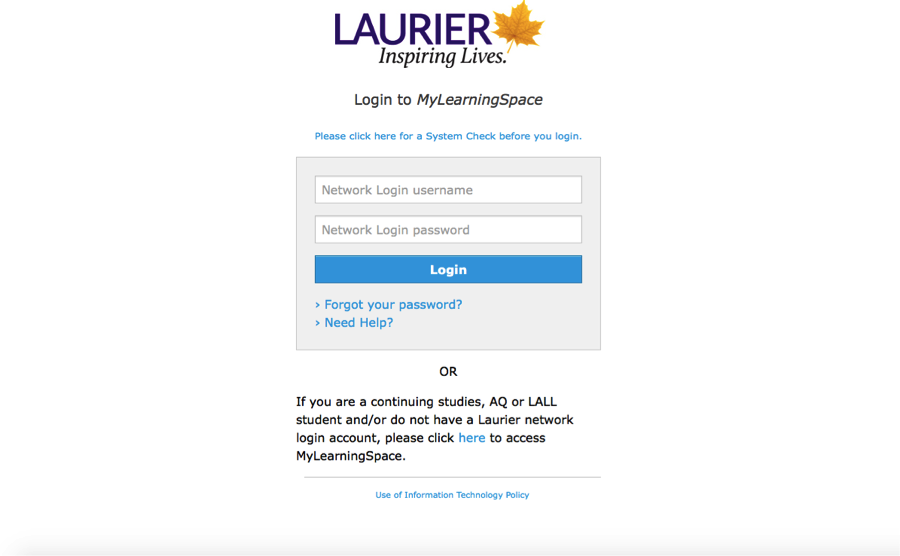
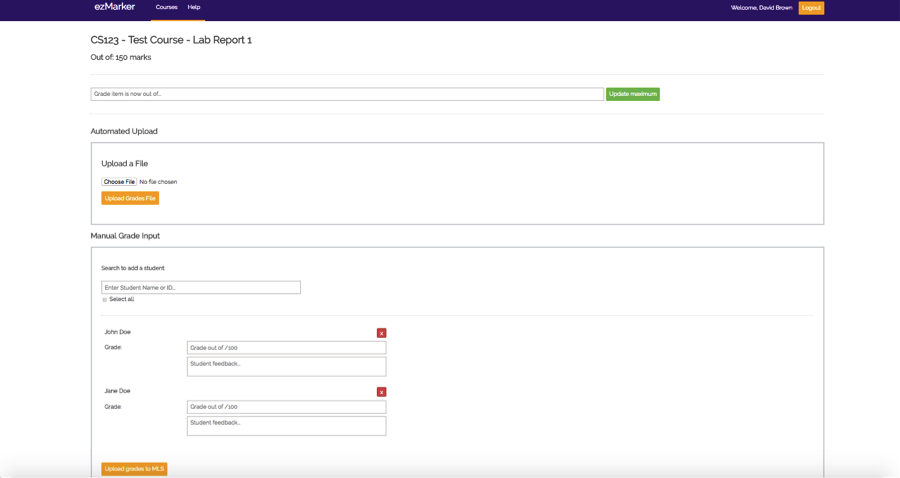
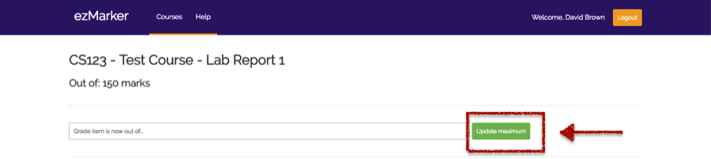
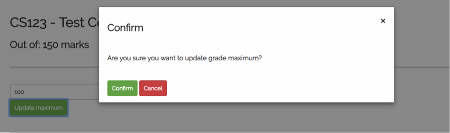
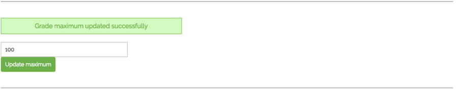
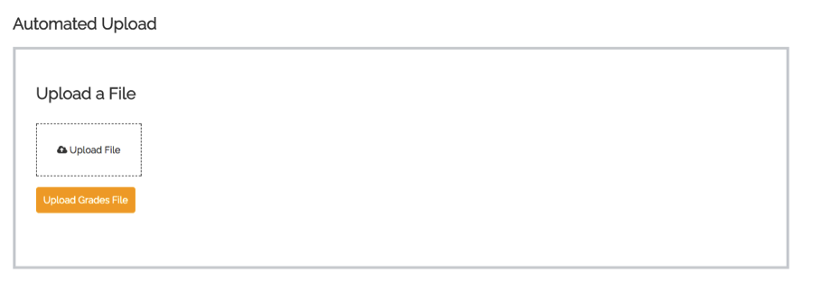
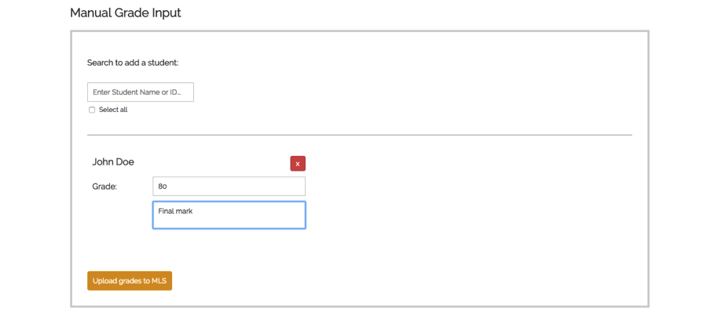
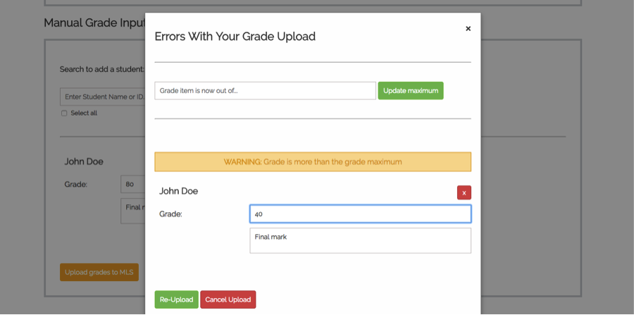
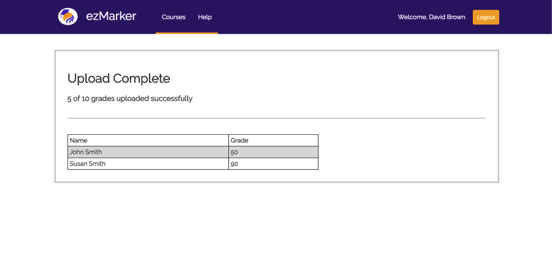

Version 1.x
Last updated: November xx, 2017
ezMarker is a web application that allows user to upload grades and feedback into MyLearningSpace (MLS). Users can set grades and feedback by uploading Autograder formatted text file. The goal of ezMarker is to solve the issues regarding manual grade uploading through the current MLS. It takes markers a few hours to upload grades and feedback for one class, however ezMarker cut dwon to minutes with the use of bulk file uploading.
User login to the ezMarker using MLS.
User should be MLS users in order to access to ezMarker.

After login, a user is presented with a list of courses that have premission to access and upload grades to it.

To modify a spacific course, user can select that course and expande it to shows the course's grade item.

Once selecting a grade items, grade item page shows.

Update maximum button allows user to enter a numeric value to update maximum value of current grade item.

If user enter value and select update, confrim message uppare to countine for updating or cancel.

Selecting confirm shows massege that successfully update the mark.
Note:
Choose uploade file botton opens file dialog for selectecting Autograde file foramted as text file

User giving an option to set grade and feedback manually for individual students by using search bar.
There is a Select All button for quickly adding input boxes for all students.

Grade should be less than maximmum value in order to upload grade successfully.
Shows how many grades were successfuly set.

user logout by selecting logout button, then directed to the Brightspace logout page.

Author: Hind Althabi
- Added more detail to the Introduction.
- Added reference links.
Author: Hind Althabi